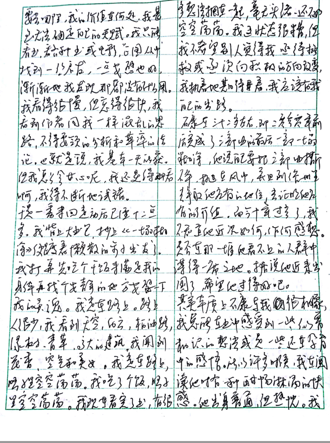
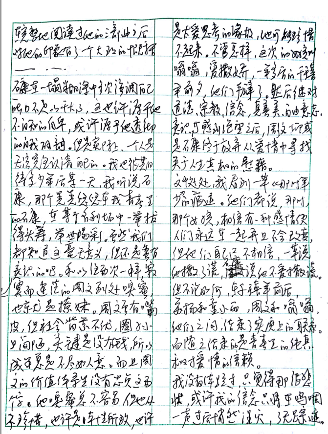

《一塌糊涂》
在继《晃晃悠悠》、《支离破碎》之后，我终于花了一整天时间完成了对石康青春三部曲中最后一部《一塌糊涂》的阅读。今天是二零一六年的劳动节，图书馆关了门，自习室少有人，大家都忙着去寻找乐趣了，然而于我而言，这一天与以往或是将来的任何一天不会有太大的分别。我在无所事事的心境下游荡，徘徊，找着一件能消磨时光又不那么令人厌恶的事情，一头扎进去，待到红日又西沉，感慨江水常东流。其实也算不得一整天。昨夜打球过度，回宿舍后疲惫不堪，甚至洗完澡也没有丝毫缓解，又作死与舍友一同订了双鸡堡与大鸡排。一行四人开着无关痛痒的玩笑，逗着重复而无新意的段子，偶尔冒出一两句有些愚蠢的俏皮话，一派其乐融融的景象。我不知道他们作何感想，反正我是感到极大的无趣，我不过是怕他们觉得无话可说的尴尬，若是独处，我是情愿终日无言的。吃过鸡排和汉堡，这垃圾食品满足了我短暂的口腹之欲，却在过后令我腹中有火烧之感，加上身体疲惫，不适感前所未有。吹干头发后连忙上床，企图通过睡眠缓解或是弥补这一切。说来睡眠真是好东西，它让我们耗散的精力得以填补，以此能够开始新的一日更加肆无忌惮、不知死活的耗散。有时睡醒后我总会想起王小波那句“以为自己会一直生猛下去”。其实我很难想象，但还是有些担心自己不能再生猛，不能再在打球时把地板跺得很响。嗯，虽然那种不适令我难以入眠，但没过多久，我还是睡着了。醒来已是九点半，我顿时被一种无所事事的感觉袭满全身。我不知道自己要干什么，要去哪里，我的价值在何处，我甚至无法确定自己的天赋。我只能看书，看各种书，或电影。企图从中找到一丝启发，一点安慰也好，渐渐的我发现那都没有什么用。我看得很慢，但忘得很快，我看到作者同我一样混乱的思路，不得要领的分析和草率的结论。也就是说，我基本一无所获。但我怎么会甘心呢，我还是得看啊，我得不断地试错。
于是一番来回走动后已是十二点多，我背上大书包，抄上《一塌糊涂》便踱着懒散的步子出发了。我打算先吃个饱饭来满足我的身体，再找个安静的地方安慰一下我的灵魂。我走在路上。路上人很少，我看到天空、白云、柏油路、绿树、青草、高大的建筑，我闻到花香、空气和美女。我走在路上，脑子里空空荡荡。我吃了个饭，脑子里空空荡荡。我现在看完了书，有很多想法捆在一起，毫无头绪，还不如空空荡荡。我这状态很糟，但我不希望别人觉得我亟待拯救或亟须向积极的方向改变。我执着地期待着，我应该有自己的出路。
石康在三十二岁左右，即二零零零年前后完成了三部曲的最后一部《一塌糊涂》。他说自己要把三部曲撕碎，抛在风中，并且到俗世里争取他应有的地位，去证明他应有的价值。而今十数年过去了，我不知道他近况如何，作何感想。是否在那一堆他看不上的人群中谋得一席之地。据说他近来出国了，希望他过得好吧。
其实本质上石康和我很相像，我总能在书中感受到一些似曾相识的想法或是一些还在孕育中的感悟。所以许多时候，我在阅读他时有种酣畅淋漓的快感。他出身普通，但热忱。我在完整地阅读过他的三部曲后对他的印象有了一个大致的概括。
1 | 如何评价石康？ |
石康在一塌糊涂中多次强调自己能力不足以干大事，这也许源于他不自知的自卑，或许源于他透彻的自我解剖。但是实际上，一个人是无法完全认清自己的。我也很期待多少年后某一天，我听说石康，在某个名利场中一举拔得头筹，举世喝彩。虽然我们都知道这毫无意义，但还是蛮有意思的吧。
和以往两次一样，寂寞而迷茫的周文到处嗅蜜，也就是撩妹。周文虽有嘴皮，但社会背景不优，圈子小且简陋，关键是没有钱，所以成果总是不尽如人意。而且周文的价值体系里没有忠贞这两个字，他嗅蜜总不容易，但也从不珍惜。也许是本性所致，也许是太爱思考的缘故，他可能珍惜不起来。不管怎样，这次的女孩叫嗡嗡，爱撒娇，一年后的千禧年前夕，他们掰了。然后在继对道德、宗教、信念、真善美、自由意志、意识等感到绝望之后，周文抑或是石康终于放弃从爱情中寻找人生真相的慰藉。
文中处处，我看到一草《那时年少》的痕迹。他们都说，那时，有个女孩，相信有一种感情使人们永远在一起并且不会改变，但他们自己不相信，一草说，他撒了谎，石康说他不爱撒谎。但不论如何，在千禧年前后，苏扬和童小语，周文和嗡嗡，他们之间，结束了实质上的联系，而随之结束的是青春里的纯真和对爱情的信赖。
我没有体验过，只是觉得那很悲壮，或许我的信念只将在呜咽一声过后悄然湮灭，了无踪迹。
石康觉得自己很牛逼，整个文明史整了一遍后高声宣布：我最屌，他们都是傻逼。但在残酷的物质生活的直接压迫下，他也还是承认：我有些无能。其实，我虽然还未看遍文明史，但有时我又何尝不是处于这种矛盾的心理状态呢。
对于石康，我很欣赏，但也觉得可悲。对我自己，也是一样。如果有命运，我不知道命运会给这一类人什么出路。我们拭目以待吧，如果值得的话。
2016.5.1 于厦大
2017.8.30 凌晨 整理 于厦大


